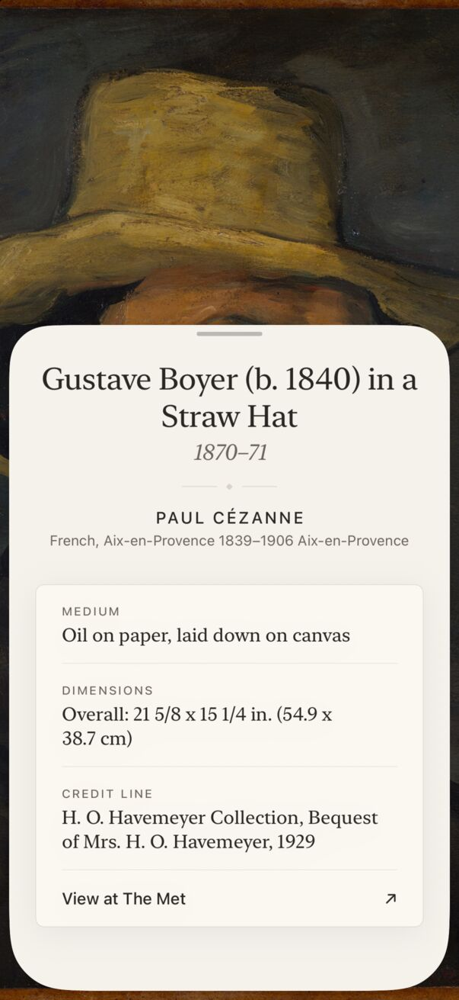

Comment fonctionne la révélation
Chaque séance accroche un tableau derrière une brume douce et mouvante. À mesure que le temps passe, elle se dissipe du centre vers les bords. Le rythme est lent au début puis s’ouvre vers la fin, si bien que les dernières minutes ont le goût d’une arrivée. À 0:00, le tableau est entièrement dégagé, coins compris.
Au-dessus du tableau s’affichent le temps restant et, si vous en avez défini une, votre intention. Tous deux sont volontairement discrets : Easel veut que vous regardiez votre travail, pas l’horloge.

Quitter l’app ou verrouiller son téléphone
Allez-y. Le minuteur est calé sur l’instant où votre séance se terminera, et non sur un décompte qui ne tourne que lorsque l’app est ouverte : il garde donc l’heure juste quand Easel est en arrière-plan ou que votre téléphone est verrouillé. À votre retour, le tableau en est exactement là où il doit être.
- Tant qu’Easel est ouvert sur une séance, l’écran ne s’assombrit pas, pour que vous puissiez suivre la révélation.
- Sur l’écran verrouillé et dans la Dynamic Island, une Activité en direct affiche le compte à rebours. Voir Widgets et Activités en direct.
- Si la séance se termine pendant votre absence, le tableau vous attend à votre retour.
Arrêter une séance plus tôt
Touchez Arrêter en haut à droite, puis confirmez. Le tableau ne sera pas terminé : il n’est donc pas ajouté à votre galerie, et la séance ne compte ni dans vos statistiques ni dans votre série. En Pomodoro, arrêter plus tôt met fin à tout le cycle.
Son, musique et retour haptique
- Le bouton haut-parleur (en haut à gauche pendant une séance) coupe ou rétablit le son pour la séance.
- Musique d’ambiance : un piano doux pendant que le tableau se révèle. Activez-la dans Réglages → Pendant une séance.
- Effets sonores : le carillon quand un tableau est révélé.
- Retour haptique : des vibrations légères sur les boutons, et au début et à la fin d’une séance.
Quand le tableau est révélé
À 0:00, le tableau entier est dégagé, et un cartel apparaît en bas de l’écran : la durée de la séance et votre intention, puis le titre du tableau, l’artiste et la date. Sur le cartel, vous pouvez :
- Toucher ⓘ pour le cartel complet du musée : technique, dimensions, provenance et un lien pour voir l’œuvre sur le site du Met. Le panneau s’ouvre exactement à sa hauteur ; balayez vers le bas pour le fermer.
- Toucher Partager pour créer une carte encadrée pour les Stories ou les publications (voir Partage).
- Toucher Terminé pour l’accrocher dans votre galerie et revenir à l’écran principal.
À certaines étapes (10, 25, 50, 100 tableaux et au-delà), Terminé ouvre d’abord une petite célébration.

